Where the lab is the classroom.
A small faculty built around hands-on science: two departments, one flagship degree in Biology and Biotechnology, and teaching laboratories with the instruments researchers actually use.
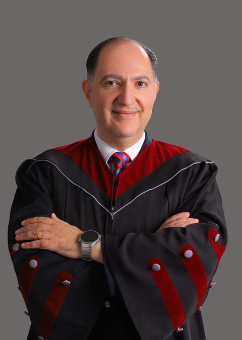
Also Dean of the Faculty of Health Sciences. Listed as dean on the faculty's page at aum.edu.jo, October 2026.
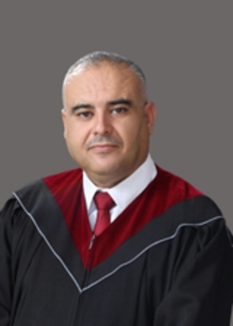
Professor of biochemistry and molecular biology (PhD, University of Jordan, 2011). His research covers oxidative stress, gene expression and oncology.
Recent highlights
- Appointed to the editorial board of Advancements in Life Sciences, a Scopus-indexed journal (October 2026).
- Supervised the AUM team that won three medals at the International Financial Security Olympiad in Krasnoyarsk, Russia (October 2026).
- Published in Frontiers in Nutrition, a Q1 journal with an impact factor of 5.1 (December 2025).
Departments
Biology and Biotechnology
A 134-credit bachelor degree spanning biochemistry, genetics, molecular biology, microbiology, immunology, plant biology, zoology, ecology and biotechnology.
See the programmeBasic Sciences and Humanities
Mathematics, physics, chemistry and the humanities courses that every AUM student takes as part of the general education programme.
Teaching laboratories, not slides.
Students learn the techniques on the instruments, not from slides.
The department's own introduction video, from aum.edu.jo.
What the faculty has been up to.
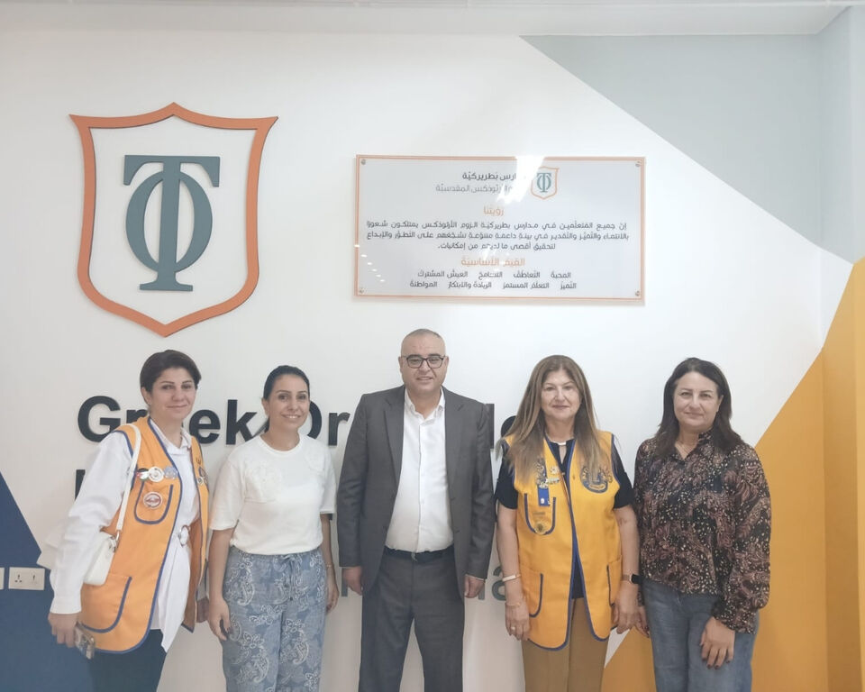
Awareness lectures on the hazards of smoking in two Madaba schools
15 October 2026Learn more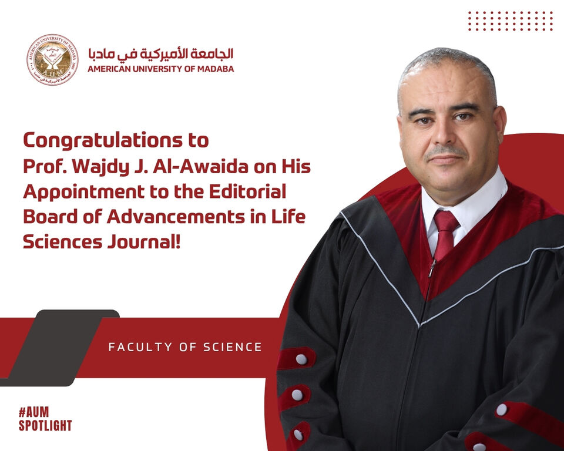
AUM Spotlight: Prof. Wajdy Al-Awaida joins the editorial board of Advancements in Life Sciences
13 October 2026Learn more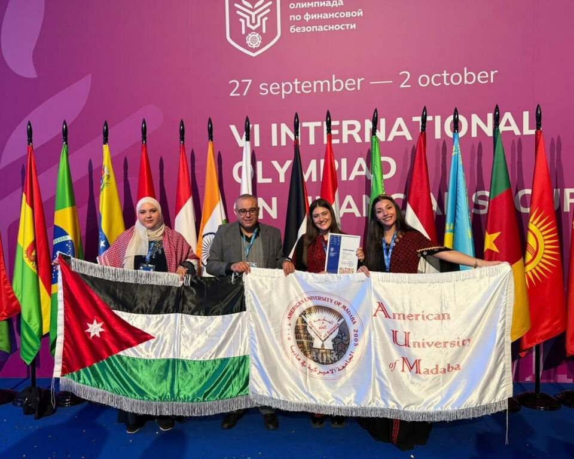
AUM shines globally: three medals at the International Financial Security Olympiad
7 October 2026Learn more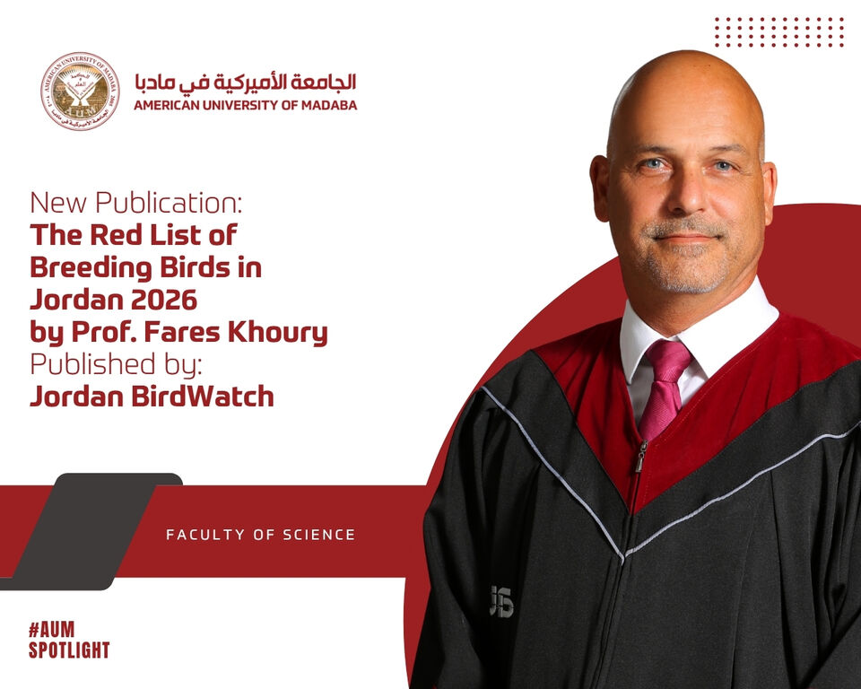
AUM Spotlight: Prof. Fares Khoury publishes The Red List of Breeding Birds in Jordan 2026
28 September 2026Learn more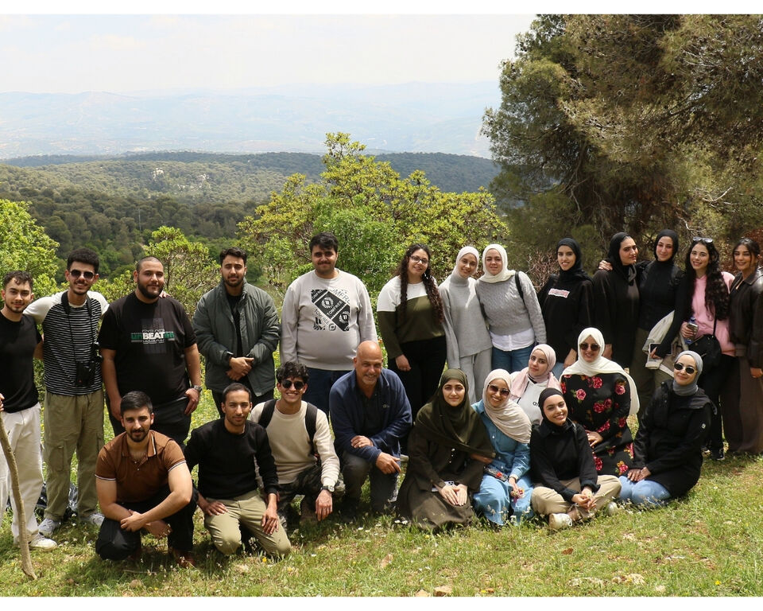
Exploring biodiversity: an ecology field study at Dibbeen Forest Reserve
9 April 2026Learn more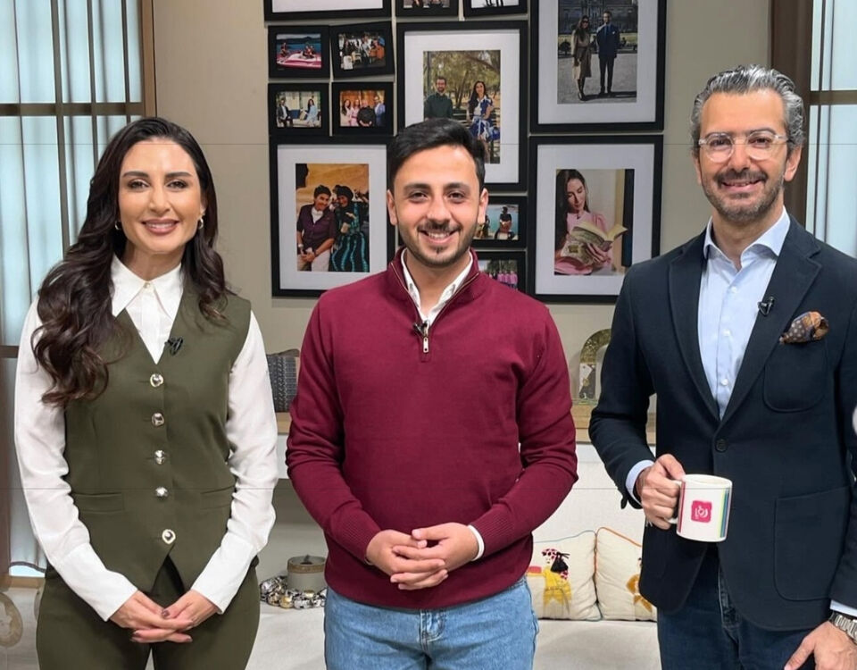
Innovative project: The Artificial Kidney wins three international awards
8 December 2025Learn moreField trips, lectures, championships.
The people who teach you.
Academic and administrative staff of the Faculty of Science, as listed on aum.edu.jo.
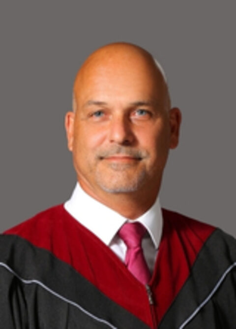
Prof. Fares KhouryProfessor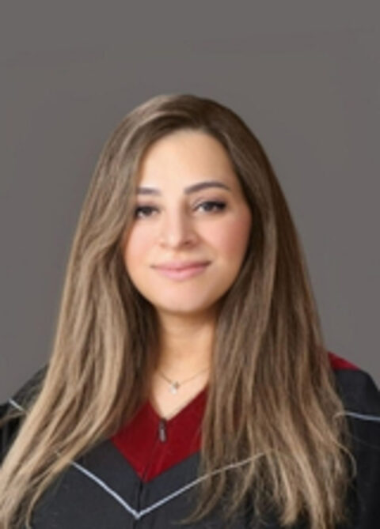
Dr. Aseel Abu-AlshaarAssistant Professor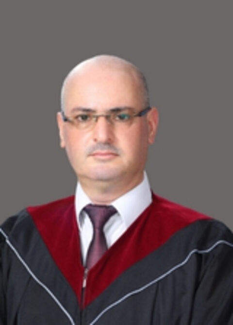
Dr. Awni Al-HouraniAssistant Professor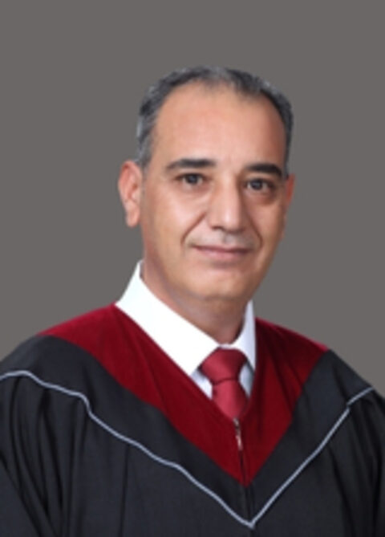
Mr. Bakr SawadehLecturer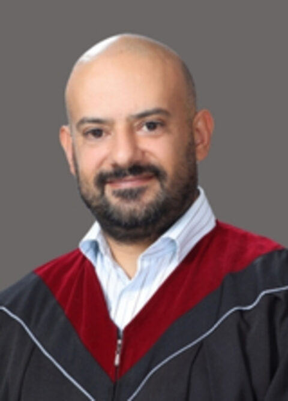
Mr. Hemam FakhouriLecturer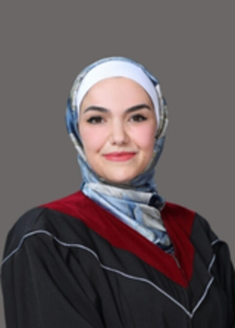
Mrs. Oraib AlshmaseenLecturer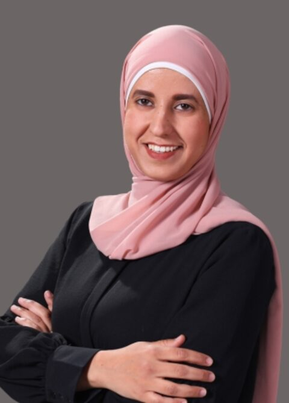
Ms. Bayan AjolinAdministrative AssistantWhere graduates go.
AUM prepares Biology and Biotechnology graduates for pharmaceuticals, clinical laboratories, environmental consultancy and postgraduate research.
Faculty of Science on aum.edu.jo
The dean's welcome, the full list of 17 labs with their equipment, staff profiles and all faculty news on the official page.
Opens on aum.edu.joStart with the online application.
Opens AUM's online application